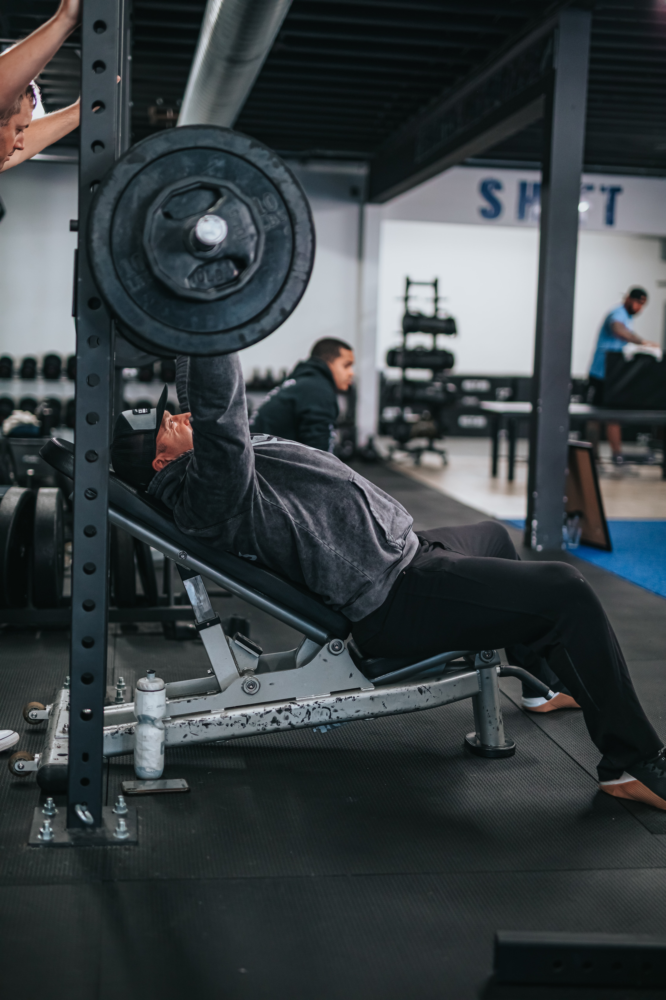

가슴 운동의 중요성
해부학적으로 가슴 근육은 크게 세가지로 나뉜다. 대흉근, 소흉근,, 전거근
하지만 학자들에 의하면 가슴 근육은 기능상 6개의 부위로 이루어져 각기 다르게 운동에 동원된다고 한다.
대흉근은 어깨관절의 수평 내전근, 내전근, 내회전근으로 기능한다.
소흉근은 대흉근 밑에 있는
작은 근육으로 견갑골의 전인, 하방 회전, 하강을 일으킨다. 소흉근은 딥과 같은 운동에서 안정화 기능을 하며 훈련된다.
소흉근이 긴장되어있으면 머리 위로 밀기 동작에서 자세를 변형시키고 견갑골의 적절한 기능을 제한한다.